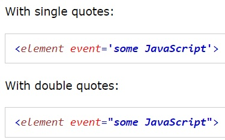
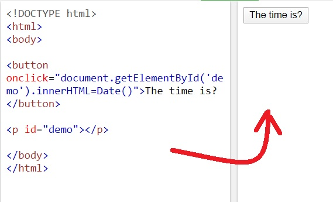
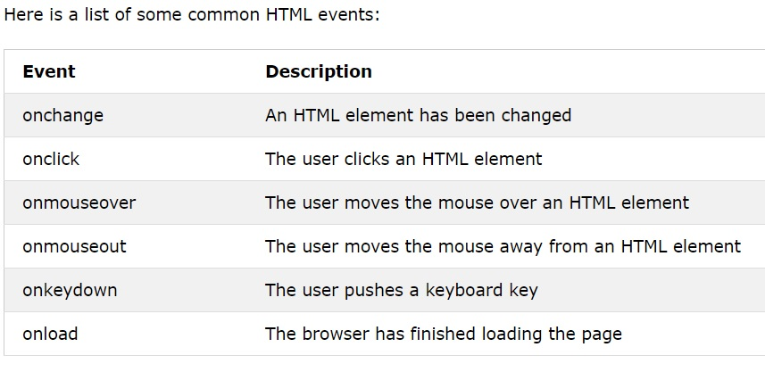

JavaScript Events
HTML olaylarý, HTML öðelerinde meydana gelen "þeyler"(THINGS) dir .
HTML sayfalarýnda JavaScript kullanýldýðýnda, JavaScript bu olaylara "tepki verebilir"(REACT) .
HTML Etkinlikleri
HTML etkinliði, tarayýcýnýn yaptýðý veya kullanýcýnýn yaptýðý bir þey olabilir.
HTML olaylarýna bazý örnekler:
Bir HTML web sayfasýnýn yüklenmesi tamamlandý
Bir HTML giriþ alaný deðiþtirildi
Bir HTML düðmesi týklandý
Çoðu zaman, olaylar meydana geldiðinde, bir þeyler yapmak isteyebilirsiniz.
JavaScript, olaylar algýlandýðýnda kod yürütmenizi saðlar.
HTML, HTML kodlarýna JavaScript kodlu olay iþleyici niteliklerinin eklenmesine olanak tanýr .

Aþaðýdaki örnekte, onclickbir (button) öðeye (kodlu) bir öznitelik eklenmiþtir :

HTML Events
